Eerst heb ik windows 10 iso gedownload en de informatie van de website gevolgd
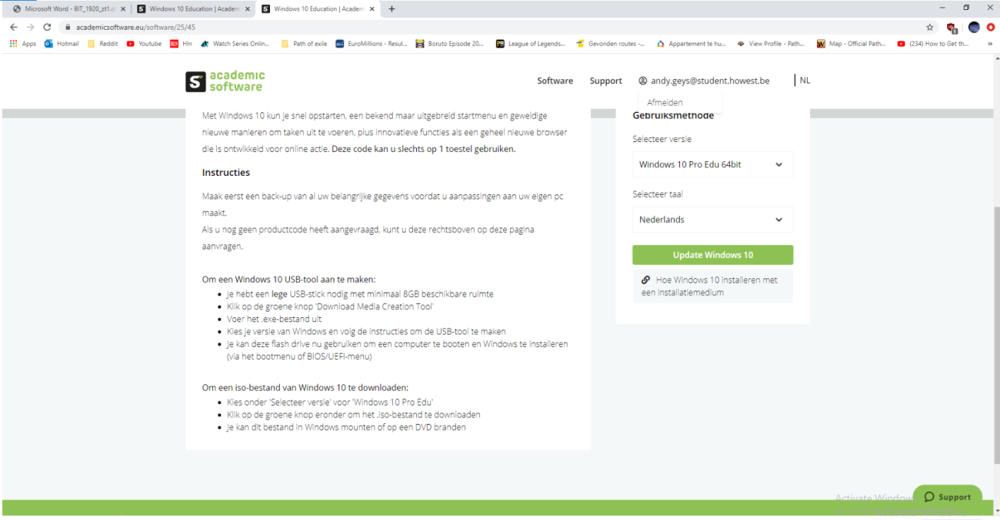dan heb ik vmware gedownload (mijn virtuele machine)
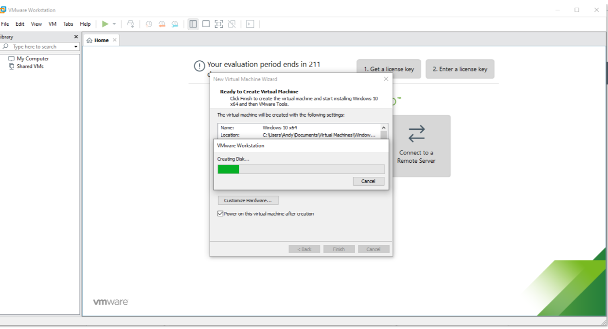Ik heb dan de handboek gevolgd voor de installatie van vmware compleet te krijgen
Eenmaal geopend ben ik naar programmas en onderdelen gegaan en dan aan de linkerkant windows onderdelen in of uitschakelen.
Dan naar internet information services en een aantal boxes gecheckt, ik zal ook in de video aantonen welke boxes ik gecheckt heb De meeste informatie kwam van online dus heb ik niet over elke check een antwoord.
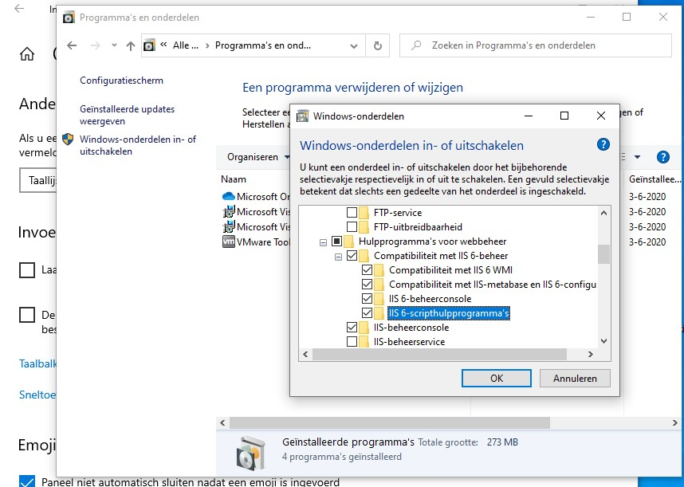Het volgende wat ik gedaan heb ik visual studio code downloaden omdat ik met dit programma weet hoe ik een bewerkte index aanmaak
Daarna heb ik mijn iis programma geopend, en dan links bij verbindingen > desktop uitklappen > sites uitklappen > Rechtklik op sites > Add new website..
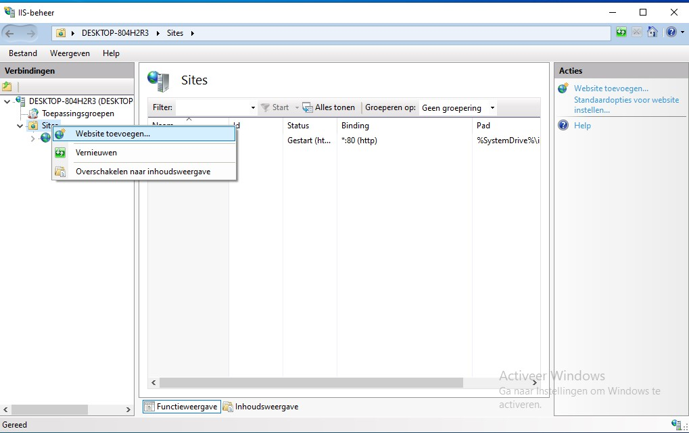Eenmaal daar vullen we het volgende in : Site naam : BasicIT (niet super belangrijk voor onze opdracht veronderstel ik), het pad dat we volgen naar onze html file is volgens mij super belangrijk! Ik heb hier veel fouten gemaakt en alleen dit pad werkte voor mij
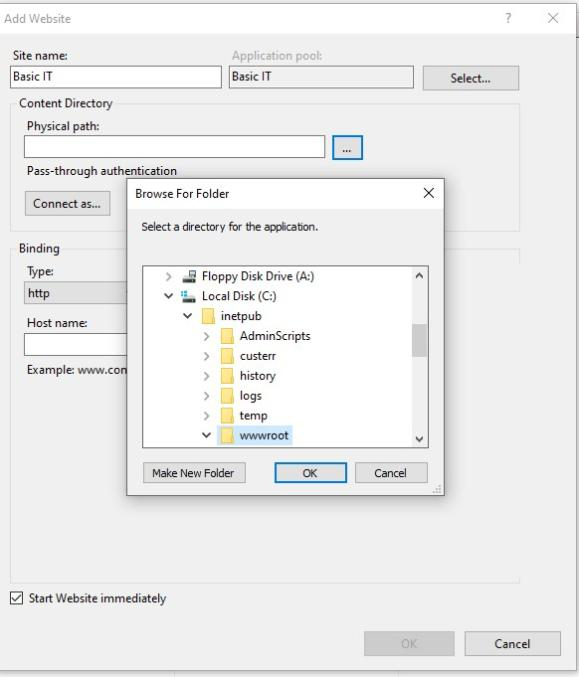dus wat doe ik hier : ga eerst naar mijn :c > inetpub > wwwroot! Hier in de wwwroot heb ik een nieuwe folder gemaakt en mijn css files van visual studio code ingeplakt
dan hebben we ip address die ik hier niet selecteer omdat ik wil dat de localhost:8188 werkt , we selecteren poort 8188 , en bij hostnaam : localhost
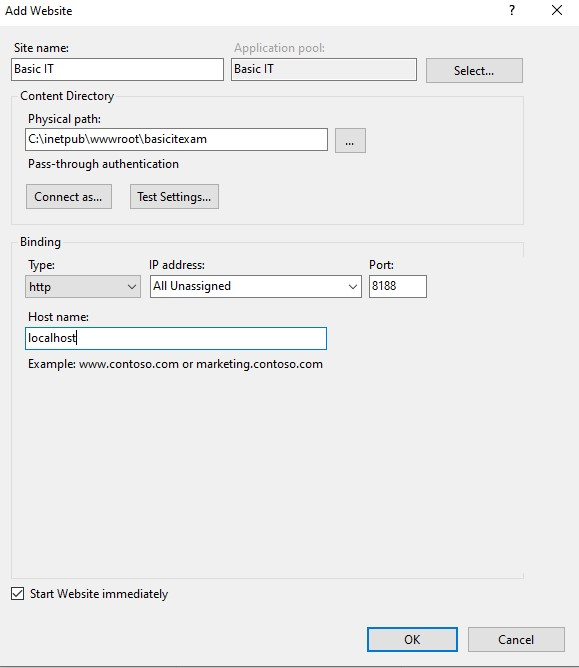momenteel staat mijn eerst testbestand als html dus het voorbeeld dat ik als volgend toon is niet mooi en perfect, daar dient dit bestand voor
dus we klikken op ok, we surfen naar localhost:8188 en deze werkt!
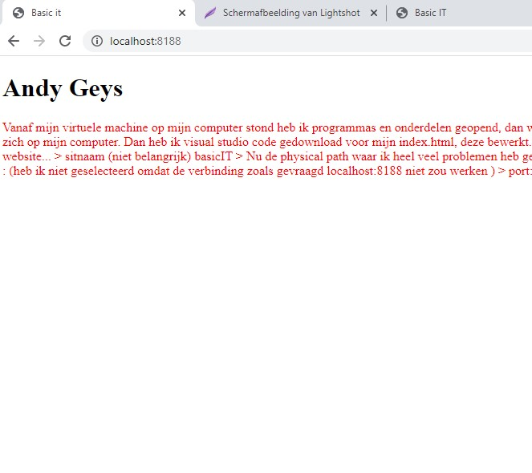het volgende wat we willen is een login hiervoor heb ik de volgende stappen gebruikt :
we klikken op onze site in iis en gaan naar authentication > eenmaal daar disablen we anonymous authentication > en enable ik basic authentication
Before authentication!!
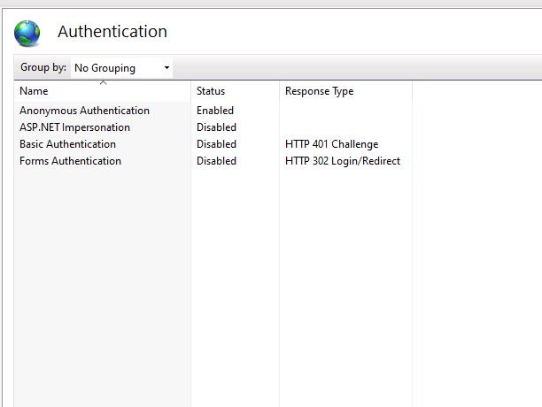After authentication!!
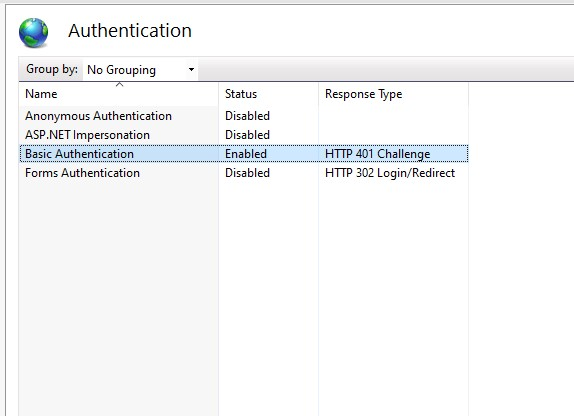Eerst dan nog heb ik computer management > local users and groups > users > add user > howestadmin + password
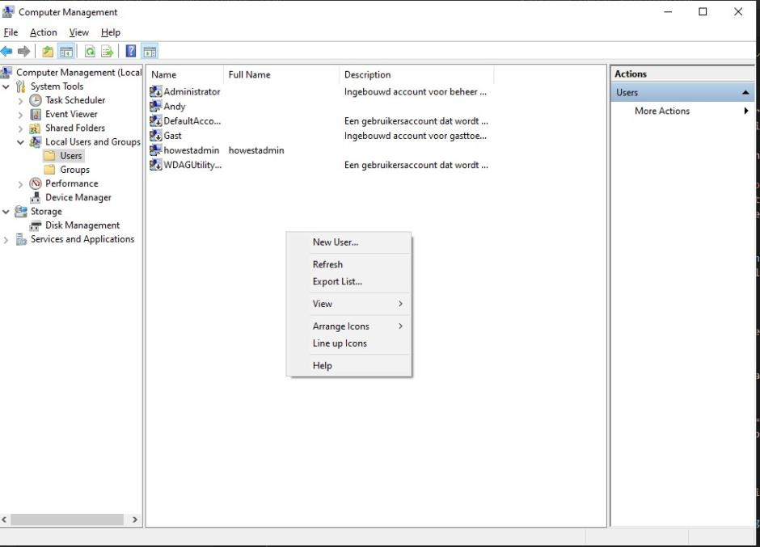en hier de website met de authentication changes, de login werkt ook volledig
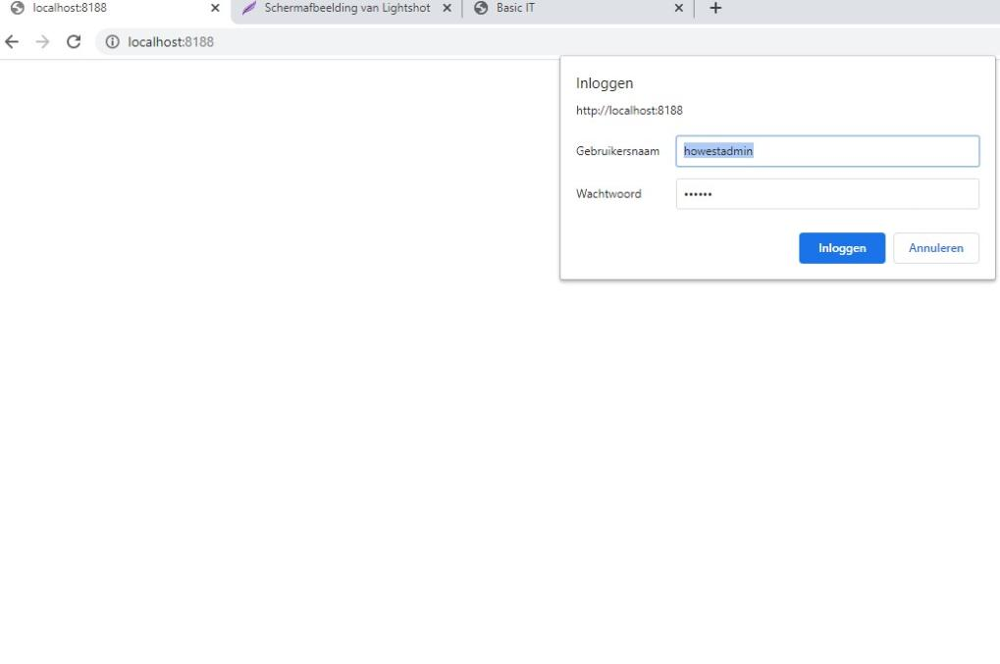vervolgens heb ik op mijn website geklikt en dan edit bindings, ik heb localhost weggehaald , mijn ipadres geselecteerd
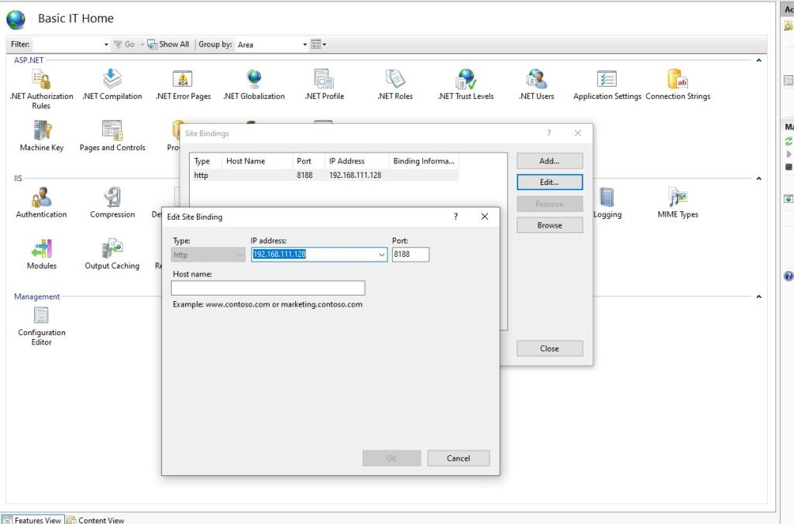en dan was de eerste opdracht klaar hier nog een foto van de website die opengaat in mijn lokale computer
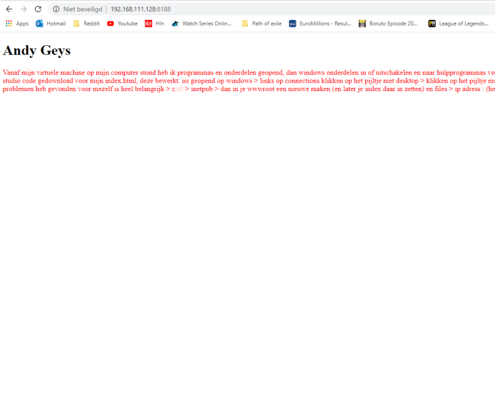